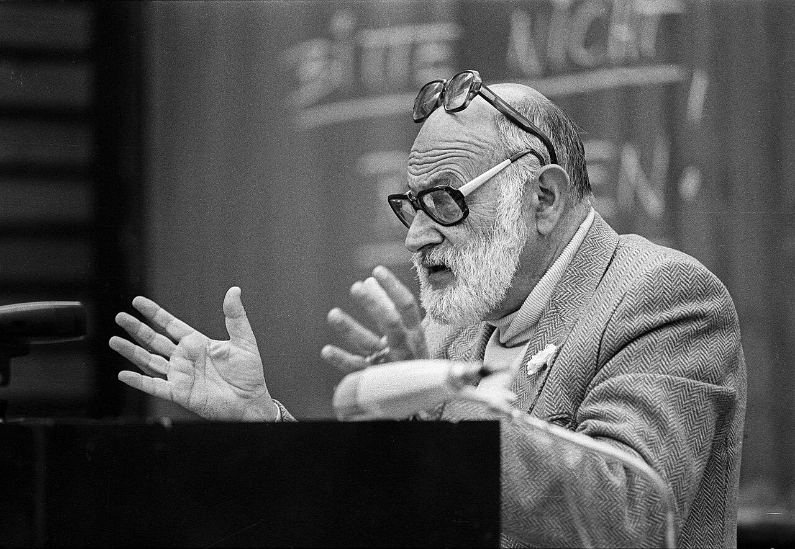
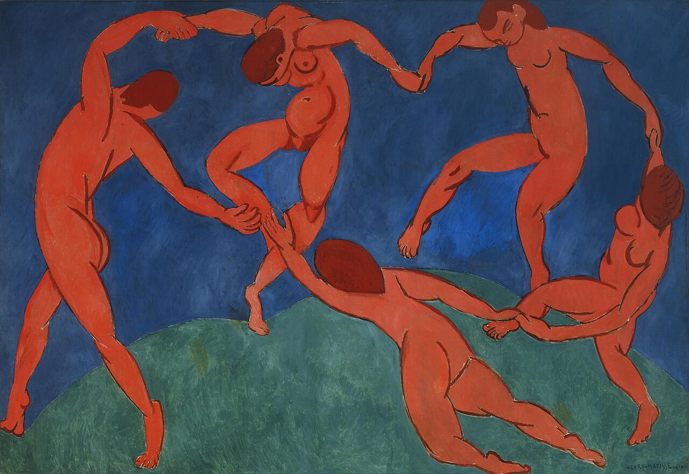

소통 구조의 모양이
곧 그 사회의 정치 형태임
00이 주차의 위상
오늘부터 연결성 축임. 앞선 이론가들은 매체와 인간(감각·의미)의 관계를 물었음. 플루서부터는 매체와 매체, 사람과 사람 사이의 구조를 물음.
- ① 강의실의 소통 구조를 그려 볼 것.
- ② 단체 대화방의 구조를 그려 볼 것.
- ③ 알고리즘 피드의 구조를 그려 볼 것.
- 세 그림이 다름. 그 그림의 차이가 무엇을 만드는가.
- → 오늘 플루서는 이 그림 여섯 개로 문명 전체를 설명함.

01오늘 만날 개념
- 코무니콜로기Kommunikologie
- 플루서의 조어. 소통학임. 코드라는 상징 체계를 토대로 인간 커뮤니케이션을 해석함.
- 코드code
- 인간과 세계의 소통에 쓰이는 상징체계임. 매체는 그 코드가 작동하는 구조(물)임.
- 기술적 이미지technisches Bild
- 사진·영화·TV·컴퓨터 이미지임. 문자를 바탕으로 만들어진 이미지로, 손으로 그린 이미지와 근본적으로 다름.
- 0차원zero dimension
- 픽셀. 점. 면(2차원)도 선(1차원)도 아닌 점들의 집합임.
- 소이疎異 · Verfremdung
- 인간이 세계로부터 벗어나 낯설어지는 현상임.
- 담론형 · 대화형discourse / dialogue
- 정보를 보존·분배하는 구조와, 정보를 교환·생성하는 구조임.
- 텔레마틱telematique
- telecommunication + informatique. 스스로 움직여 멀리 있는 것을 가깝게 가져다 주는 기술.
- 피상성Oberflächlichkeit
- 표면성. 깊이가 없음. 플루서는 이것을 긍정함.
- 호모 루덴스homo ludens
- 유희하는 인간임. ↔ 호모 파베르(도구적 인간, 7주차 안더스).
- 부정의 엔트로피negentropy
- 무질서로 흩어지는 것에 저항해 질서를 만드는 것임.
02코드 3시대와 0차원
| 차원 | 이미지 시대 | 문자 시대 | 기술적 이미지 시대 |
|---|---|---|---|
| 시기 | 알파벳 이전 선사시대 | 알파벳 시대 역사시대 | 알파벳 이후 포스트역사시대 |
| 코드와 매체 | 마술적 이미지 — 동굴벽화 | 문자 — 책 중심 | 기술적 이미지 — 사진·영화·TV·인터넷 |
| 구성 요소 | 평면(2차원) | 선(1차원) | 픽셀(0차원) |
| 지적 행위 | 상상 — 순환적 사유 | 파악 — 선형적 사유 | 배열 — 모자이크식 사유 |
| 실재와 가상 | 실재와 가상의 혼동 | 가상을 통한 실재 모방과 인식 | 실재 없는 가상 창조 |
| 철학적 구분 | 존재론 | 인식론 | 미학 |
한눈에 봄
한 줄씩 따라감
배열될 뿐임
- 그림은 면임. 한눈에 봄. 눈이 순환하며 봄. 어디부터 봐도 됨.
- 글은 선임. 한 줄씩 따라가야 함. 그래서 인과·논리·역사가 생김.
- 디지털 이미지는 점임. 픽셀의 집합. 선도 면도 아님. → 점들을 어떻게 배열하느냐가 전부임.
- 실감 나는 사례 — 신문 1면은 면이라 눈이 헤맴. 책은 선이라 처음부터 끝까지 감. 피드는 점의 연속이라 순서도 없고 끝도 없음.
맥루언도 모자이크식 사유를 말했음(선형적 글쓰기 비판). 두 사람이 같은 결론에 다른 경로로 도달했음.
이미지 → 문자 → 기술적 이미지로 갈수록 인간은 세계에서 한 걸음씩 물러남. 그런데 플루서는 이것을 비극이 아니라 자유의 조건으로 읽음. 한 줄로 요약하면 — "깊이를 찾지 말고 표면 자체를 보라"는 현상학적 태도를 매체에 적용했음."
03커뮤니케이션 구조 6종
- 인간은 죽음과 인생의 무의미를 떨쳐내려 세계와 인생에 의미를 부여함.
- 코드를 통한 세계 인식을 넘어 타인과의 커뮤니케이션으로 문화 세계를 창조함.
- 정보가 흩어지지 않도록 커뮤니케이션 구조를 형성함 = 부정의 엔트로피.
이 여섯은 은유가 아니라 문자 그대로 네트워크 토폴로지임.
담론형 — 정보의 보존과 분배
| 구조 | 토폴로지 | 사례 | 성격 |
|---|---|---|---|
| 극장형 | star | 무대 있는 극장, 교실, 콘서트홀 | 충실성 높음 — 오목한 벽이 확성기 역할을 하고 소음을 차단함 발전 가능성 높음 — 수신자가 미래의 송신자로 발전함 |
| 피라미드형 | tree | 군대, 교회, 정당, 행정기관 | 충실성 높음 — 릴레이(권위자)가 단계별로 재코드화해 잡음을 제거함 발전 가능성 낮음 — 위계질서, 폐쇄적 |
| 나무형 | DAG | 과학, 기술, 예술계 | 충실성 낮음 — 교류가 릴레이의 권위를 대체함. 파편이 교차하며 흩어짐 발전 가능성 높음 — 수신자가 해석하고 재전송함 |
| 원형극장형 | broadcast | 서커스, 콜로세움, 신문, 텔레비전 | 충실성 높음 / 발전 가능성 불필요 → 04절에서 따로 다룸 |
대화형 — 정보의 교환과 생성
원형 ring
엘리트 커뮤니케이션
- 사례 — 원탁 위원회, 실험실, 회의, 의회
- 모든 정보의 '공통 분모'를 발견해 새 정보를 도출함
- 의견 일치가 아니라 갈등에서 출발함
- 폐쇄 회로, 참여자 수 제한. 잡음에 개방적이어야 함
- 성공률은 낮지만 이상적 커뮤니케이션임
망형 mesh
대중의 일상적 참여
- 사례 — 잡담, 수다, 소문의 확산. 우편·전화·인터넷
- 정보의 합성보다 새로운 정보가 스스로 탄생함
- 잡음의 침투로 정보가 계속 변형됨 → 여론의 형성과 변화
- 열린 회로. 성공률 높음. 집단적 기억을 형성함
플루서는 잡담·수다·소문을 낮게 보지 않음. 망형은 새 정보가 탄생하는 유일한 구조임. 6주차 아도르노가 대중문화를 기만이라 한 자리에서, 플루서는 수다를 창조의 조건이라 함.
04원형극장형
송신자는 영원히 송신 역할.
수신자는 정보 저장고일 뿐 피드백 불가.
- 우주적 개방성(무경계) — 극장형에서 오목한 벽을 제거한 형태임.
- 송신자와 채널(신문지·전파)은 정보 분배 공간에서 떠다니고 있음.
- 대중의 무구조성 — 수신자도 먼지 형태로 떠다니고 있음.
- → 전체주의적 구조임.
| 플루서의 원형극장형 | 알고리즘 피드 |
|---|---|
| 대중의 무구조성 — 수신자가 먼지처럼 떠다님 | 팔로우 관계가 무의미해지고 개별 계정이 원자화됨 |
| 수신자-수신자 사이 소통 없음 | 같은 게시물을 봐도 누가 봤는지 모름. 옆 사람과 다른 피드를 봄 |
| 채널만 존재 | 플랫폼만 있고 관계는 없음 |
| 송신자는 영원히 송신 | 추천 엔진은 멈추지 않음 |
댓글·인용·공유는 수신자-수신자 소통 아닌가. 그렇다면 지금의 피드는 원형극장형인가 망형인가.
05매체 성격의 유동성
담론형 매체
흐르게 함- 코드화된 메시지를 송신자 기억에서 수용자 기억으로 흐르게 함
- 포스터, 영화관
대화형 매체
교환하게 함- 코드화된 메시지를 여러 기억들 사이에서 교환되게 함
- 마을 공터, 증권시장
- 포스터에 낙서를 하면 어떻게 되는가.
- 영화 스크린에 달걀을 던지면 어떻게 되는가.
- 마을 공터에서 정치가가 연설하면 어떻게 되는가.
- 증권시장에 거래가 없고 가격표만 있으면 어떻게 되는가.
- → 매체의 성격은 고정된 것이 아니라 사용에 따라 뒤집힘. 1주차 부정성(不定)의 정확한 사례임.
- 댓글창은 대화형인가 담론형인가. 댓글이 '좋아요 순'으로 정렬되면 어떻게 되는가.
- 라이브 채팅은 어떠한가. 스트리머는 읽지만, 채팅끼리는 대화하는가.
- AI 챗봇은 어떠한가. 형식은 대화형인데, 상대가 다음에 나를 기억하지 않는다면 어떻게 되는가.
- 국가 통제 확산 기구에서 사적 커뮤니케이션으로 전환하자는 제안임.
- 원문 취지 — "라디오를 분배 장치에서 소통 장치로 바꿔야 한다. 청취자를 듣게만 하지 말고 말하게 하라."
- 인터넷 초기 낙관론의 원형임. 그리고 지금 우리는 그 실험의 결과를 앎.
- 담론형 과잉 → 정보의 지속적 손실.
- 대화형 과잉 → 폐쇄 집단 내 정보 폭발.
- 스스로 물어볼 것 — 에코 챔버는 대화형 과잉인가 담론형 과잉인가. 겉보기엔 다들 떠들지만(대화형), 실제로는 같은 것을 재확산함(담론형).
06텔레마틱 사회
담론적 사회
분배만 있음- 중세 교회 중심 사회
- 대중매체에 빠진 대중의 사회
대화적 사회
소수만 대화함- 계몽주의 이후 서구 엘리트 사회
- 부르주아 공론장. 대중은 소외됨
텔레마틱 사회
플루서의 이상- 담론과 대화의 균형
- 대화는 담론에 의존하고, 담론은 대화를 자극함
- 대중매체의 담론적 송신자 회로에 대화적 커뮤니케이션 구조를 장착함.
- 누구나 참여하는 민주적 커뮤니케이션임.
- '조용한 신 혁명가들'의 창조적 활동 — 대중매체가 제공하는 오락에 몰입되지 않고 상호 대화하며 콘텐츠를 창조하는 사람들임.
- 플루서는 인터넷을 정확히 예견했음. 그런데 그가 기대한 방향으로 갔는가.
- 플루서(1980년대) — 담론형 매체가 대화형으로 갈 것임.
- 실제(2020년대) — 대화형으로 시작한 서비스가 알고리즘 피드 = 원형극장형으로 되돌아갔음.
- 정반대 방향임. 왜 그랬는가. 광고 수익 모델인가, 규모의 문제인가, 참여의 비용인가, 소유 구조인가. 아니면 플루서가 놓친 것이 있는가.
07피상성 예찬과 호모 루덴스
피상성 예찬 — 이미지는 의미 복합체임
- 이미지의 평면성을 긍정함. 의미(문자)를 포함하고 있으므로 선사시대 이미지와 다름.
- 이미지에 대한 다양한 해석이 가능함.
- 기술적 상상력이 필요함 — 기술(장치) + 상상. 세계를 0차원 코드로 평면에 축소시키는 능력임.

- 호모 파베르(도구적 인간) → 호모 루덴스(유희하는 인간). 타인과 관계하며 목적 없는 게임을 즐김.
- 안더스 — 호모 파베르가 자기 생산물의 노예가 됨. 프로메테우스적 부끄러움.
- 플루서 — 호모 파베르를 그만두고 호모 루덴스가 되라.
- 같은 진단(도구적 인간의 곤경), 정반대 처방임.
- 아도르노 — 무기능성. 비판을 위한 것.
- 안더스 — 부끄러움. 자각을 위한 것.
- 플루서 — 유희. 창조를 위한 것.
메타피직스(형이상학)의 패러디임. 우스꽝스러운 것과 부조리로 가득 찬 사이비 철학. 예술적·지적 유희임. 메타포(metaphor) → 파타포(pataphor)로, 가상과 현실이 중첩됨. 사례는 이상한 나라의 앨리스, 그리고 밈 문화임.
08디지털 가상
이 강의에서 가장 낙관적인 대목임.
- 만들어진 공간이며 부차적 세계로 인식됨.
- 거짓과 속임수가 개입된다는 평가를 받음.
플루서의 재정립
- 가상 이미지의 지위를 복위시켜야 함.
- 본질과 가상의 구분(플라톤)은 불필요함.
- 실재의 모방(문자시대)은 중요하지 않음.
- 이미지는 독립적으로 자체 의미를 갖고 존재함.
- 현대사회에서 원본과 복제 모두 우리가 지각하는 표면임. 무수한 가능성이 존재하는 다원적 세계에서 이분법은 무의미함.
질적 차이가 아니라 양적 차이임."
csuri.osu.edu(오하이오주립대 아카이브)에서 원작을 확인할 수 있음
- 복제와 가상으로 예술하기. 기술적 알고리즘에 상상력을 동원함.
- 문제는 기술이 아니라 상상력 부족임. 호모 루덴스가 필요함.
보드리야르 11주
허무주의- 시뮬라크르. 실재의 소멸
플루서 오늘
유희- 기술적 형상의 완성. 해상도의 차이일 뿐
왜 이 구도가 계속 반복되는가 — 매체는 파르마콘이기 때문임(2주차). 같은 것이 약이자 독임.
09원격현전 — 접속과 접촉
심혜련(2024) II부 2장 「원격현전 시대에서의 소통과 관계 맺기」 pp.181~206 + II부 4장 3절 「이미지로 사유하기」 pp.255~261.
- 멀리 있으면서 있는 것처럼 — 원격현전(telepresence) 시대의 관계임. 텔레마틱의 한국어 갱신판임.
- 이미지로 사유하기 — 문자가 아닌 이미지로 사유하는 것이 가능한가. 플루서의 기술적 상상력과 직결됨.
- 원격현전은 접속(connection)을 무한히 늘렸음. 그런데 접촉(contact)은 어떠한가.
- 접속 = 채널이 열려 있음. 접촉 = 서로가 서로에게 영향받음.
- 스스로 물어볼 것 — AI 챗봇과의 대화는 '접속'인가 '접촉'인가.
- 챗봇은 나에게 영향받는가. 맥락 창 안에서는 그러함. 창이 닫히면 어떻게 되는가.
- 나는 챗봇에게 영향받는가. 이건 분명히 그러함. → 일방적 접촉은 접촉인가.
플라톤은 현전(presence)을 요구했음. 지금 우리는 원격현전을 삶. 플라톤이 요구한 현전은 여전히 필요한가, 아니면 낡은 요구인가.
10그래프와 네트워크 사유
변정수(2025) 3부 6장 「그래프와 네트워크 사유」 + 3부 2장 「병렬 처리와 다원성」.
- 그래프는 노드와 엣지로 관계를 그리는 방법임.
- 따져볼 것 — 방향성(유향/무향), 연결성(연결 요소, 경로), 중심성(누가 허브인가).
| 플루서 | 토폴로지 | 그래프 성질 |
|---|---|---|
| 극장형 | star | 중심 노드 1개, 양방향 엣지, 지름 2 |
| 피라미드형 | tree | 계층, 단방향, 각 노드는 부모 1개 |
| 나무형 | DAG | 방향 있고 순환 없음, 다중 경로 |
| 원형극장형 | broadcast | 송신자→수신자 단방향, 수신자 간 엣지 0 |
| 원형 | ring | 폐쇄 회로, 모든 노드 차수 2 |
| 망형 | mesh | 다대다, 높은 밀도, 잡음 유입 |
- ① 강의실 ② 단체 대화방 ③ 알고리즘 피드 ④ 오픈소스 프로젝트 ⑤ 라이브 스트리밍 ⑥ AI 챗봇과의 대화
- 판정 힌트 — ③은 원형극장형처럼 보이지만 수신자 간 엣지가 정말 0인가. 인용·공유·밈이 있음.
- ④는 나무형(DAG)에 가까움. 플루서가 "과학·기술·예술계"라 한 그 구조임.
- ⑤는 스트리머→시청자는 broadcast, 채팅끼리는 mesh. 두 구조가 겹쳐 있음.
- ⑥은 노드가 둘인데 한쪽은 다음 대화에서 나를 기억하지 못함. → 엣지는 있는데 노드가 지속하지 않는 그래프임. 플루서의 6종에 없음.
- 플루서의 망형에서는 여러 사람이 동시에 말함 → 병렬 처리.
- 아렌트의 다원성 — 사람들이 서로 다르다는 사실이 정치의 조건임.
- 병렬 처리는 여러 작업을 동시에 하되 같은 종류의 작업임. 다원성은 환원 불가능한 차이임.
- → SNS의 동시성은 다원성인가, 그저 병렬성인가. 6주차 아도르노의 비동일자와 만남.
11정리 · 흔한 오해 · 토론
이번 주 개념 다섯
- 코드 3시대 이미지(2차원·상상) → 문자(1차원·파악) → 기술적 이미지(0차원·배열).
- 담론형 / 대화형 정보를 보존·분배하는 구조와, 교환·생성하는 구조.
- 원형극장형 참여자 간 소통 없이 채널만 있는 구조. 전체주의적. 피드의 도해임.
- 텔레마틱 사회 담론과 대화가 균형을 이루는 사회. 플루서의 이상임.
- 피상성 예찬 / 호모 루덴스 깊이 없는 표면을 긍정하고 유희하는 인간이 되라.
흔한 오해 셋
- 교정 — 플루서는 균형을 말함.
- 담론형이 없으면 정보가 흩어져 문화가 축적되지 않음. 양쪽 과잉이 모두 병리임.
- 교정 — "깊이를 찾는 습관을 버리고 표면 자체를 읽는 능력을 기르라"는 요구임.
- 게으름이 아니라 다른 종류의 훈련임.
- 교정 — 플루서는 원형극장형을 전체주의적 구조라고 명시함.
- 낙관은 조건부임 — 대화형 구조를 장착했을 때만 텔레마틱 사회가 됨.
토론 질문
- SNS는 대화형인가 담론형인가. 6종 도해 중 어디에 그릴 것인가.
알고리즘 피드는 망형인가 원형극장형인가. 반론 — 댓글·인용·공유는 수신자-수신자 엣지 아닌가. - 플루서는 담론형 매체의 대화형 매체화를 기대했음. 플랫폼은 그 반대로 갔는가.
갔다면 왜 갔는가. - 생성 이미지는 플루서가 예견한 '기술적 형상'의 완성인가.
"실재와 가상은 해상도의 차이일 뿐"이라는 테제를 지금 받아들일 수 있는가. 보드리야르와 대립시키면 어느 쪽에 설 것인가. - AI 챗봇과의 대화는 '접속'인가 '접촉'인가.
일방적 접촉은 접촉인가. - 병렬적 다수성과 아렌트의 다원성은 같은가.
SNS의 동시성은 다원성인가, 그저 병렬성인가. - 슬라이드의 네 물음을 오늘 버전으로 바꾸면 어떻게 되는가.
댓글창은? 라이브 채팅은? 프롬프트는? - 플루서는 호모 루덴스를, 아도르노는 무기능성을, 안더스는 부끄러움을 말함.
AI 시대의 실천론으로 어느 것이 가장 유효한가.
12참고자료
이번 주 읽기
- B 심혜련 (2012). 『20세기의 매체철학』 — 2부 3장
- C 심혜련 (2024). 『21세기의 매체철학』 — II부 2장 pp.181~206 / II부 4장 3절 pp.255~261
- D 변정수 (2025). 『알고리즘으로 철학하기』 — 3부 6장 (+ 3부 2장)
원전
- 빌렘 플루서. 『코무니콜로기』 — 커뮤니케이션 구조 6종 대목. 03절의 원천
- 빌렘 플루서. 『사진의 철학을 위하여』 — 장치와 기능자, 블랙박스. 짧고 학부생도 읽음
- 빌렘 플루서. 『기술적 형상의 세계』 / 『피상성 예찬』
- 베르톨트 브레히트. 「라디오 이론」(1932) 짧은 글. 05절의 원전
- 한나 아렌트. 『인간의 조건』 — 다원성 대목
보조
- 김성재 (2013). 『플루서, 미디어 현상학』. 커뮤니케이션북스 국내 최고 입문서
- Flusser Studies 무료 국제 저널
더 볼 것 — '장치와 기능자'
- 플루서는 사진기를 블랙박스로, 사진가를 그 프로그램을 실행하는 기능자로 봄. 생성 AI에 그대로 적용됨 — 프롬프터는 창작자인가 기능자인가.
- 플루서에 따르면 모든 장치는 계산 기계임. 카메라도 그러함. 그렇다면 지금의 AI는 새로운 것이 아니라 장치의 완성인가.
이어지는 주차
- 14주차 — 폴 비릴리오: 속도와 질주학 연결성
플루서가 구조를 말했다면, 비릴리오는 그 구조를 가로지르는 속도를 말함.